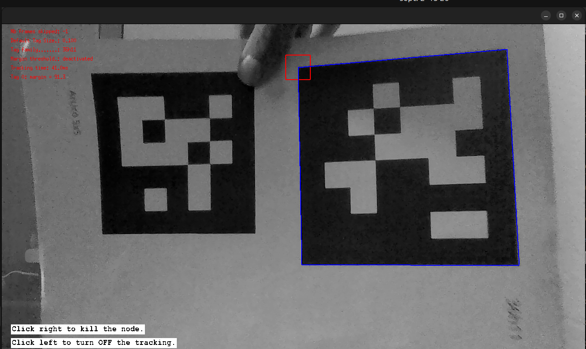
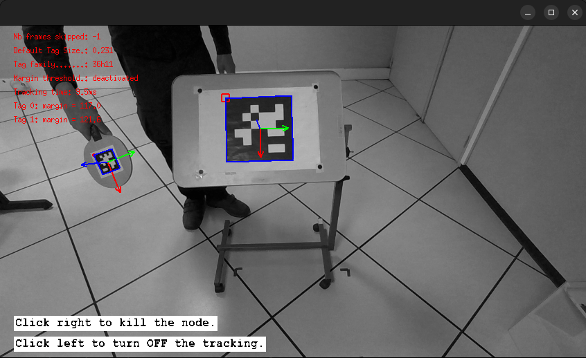

AprilTag tutorial
This is a tutorial for the visp_apriltag package. The documentation of the AprilTag and ArUco tags detector provided
by ViSP can be found here.
ViSP documentation also provides step-by-step tutorials to progressively learn how to use the detector
here .
Consequently, this tutorial will not focus on explaining the meaning of the different parameters of the
detector, but instead focus on the specificities on how to use the visp_apriltag package.
We provide two examples on how to use the visp_apriltag package: one that works with a live camera thanks to
the v4l2_camera package, and one that uses a pre-recorded rosbag. We will first have a look to the tutorial
that uses a live camera.
Tutorial using a live camera
Purpose of this tutorial
The purpose of this tutorial is to have a simple situation where we assume that all the tags have the same dimension.
How to launch it
If you compiled the packages, you have to source the workspace in which you have compiled the packages.
Otherwise, if you installed the packages using the package manager, you only have to source the /opt/ros/${ROS_DISTRO}/setup.bash
file (or one of the other setup files if you are not using bash).
Then you can run:
ros2 launch visp_tk_tutorials apriltag_tracker_live_v4l_launch.py
If you get the following error when launching the launch file, it is because your camera has not been calibrated yet. See for instance the documentation of the camera_calibration package to see how to calibrate your camera.
[camera.v4l2_camera]: using default calibration URL
[v4l2_camera_node-1] [INFO] [camera.v4l2_camera]: camera calibration URL: file:///home/${USER}/.ros/camera_info/integrated_webcam_hd:_integrate.yaml
[v4l2_camera_node-1] [ERROR] [camera_calibration_parsers]: Unable to open camera calibration file [/home/${USER}/.ros/camera_info/integrated_webcam_hd:_integrate.yaml]
[v4l2_camera_node-1] [WARN] [camera.v4l2_camera]: Camera calibration file /home/${USER}/.ros/camera_info/integrated_webcam_hd:_integrate.yaml not found
[visp_apriltag_node-2] [INFO] [tracker_apriltag]: Receive image
[visp_apriltag_node-2] [INFO] [tracker_apriltag]: Waiting for camera info...
[visp_apriltag_node-2] terminate called after throwing an instance of 'std::runtime_error'
[visp_apriltag_node-2] what(): uncalibrated camera
The launch file accepts different arguments. To have the list and the explanations related to the arguments, please run:
ros2 launch visp_tk_tutorials apriltag_tracker_live_v4l_launch.py --show-args
When you start the launch file, the detector will be turned on, and you should see the result of
the detection on screen. It should look like the following image (please be careful of using the same tag
family than the one set as the launch argument tag_family):


Code explanation
Let’s have a look at apriltag_tracker_live_v4l_launch.py:
We will break it down to better understand it.
First, we begin by declaring the parameters that will be needed by the v4l2_camera node. See the
v4l2_camera documentation for
more details on these parameters.
Then, we declare the parameters of the visp_apriltag node. See
visp_apriltag documentation
for a detailed explanation of its parameters.
The important thing to notice is that the behavior of the visp_apriltag node if the launch file is launched
without any arguments is to consider that all the tags have a size of 0.1 meter and that the node will not publish
any messages on the pose topic.
Then, we create the v4l2_camera node, using some launch arguments and some hard-coded values for its parameters:
Then, we create the visp_apriltag node, using some launch arguments and some hard-coded values for its parameters:
Finally, we ask to stop all the nodes once the visp_apriltag is killed by a right click on the window.
Tutorial using a rosbag
Purpose of this tutorial
The purpose of this tutorial is to learn how to handle situations where the tags may have different sizes.
How to launch it
If you compiled the packages, you have to source the workspace in which you have compiled the packages.
Otherwise, if you installed the packages using the package manager, you only have to source the /opt/ros/${ROS_DISTRO}/setup.bash
file (or one of the other setup files if you are not using bash).
Then you can run:
ros2 launch visp_tk_tutorials apriltag_tracker_bag_launch.py
When you start the launch file, the detector will be turned on, and you should see the result of the detection on screen, which sould look like the following image:


Code explanation
Let’s have a look at apriltag_tracker_bag_launch.py:
First, we declare the parameters of the visp_apriltag node. See
visp_apriltag documentation
for a detailed explanation of its parameters.
The important thing to notice is that the behavior of the visp_apriltag node if the launch file is launched
without any arguments is to consider that all the tags whose ID is 0 have a size of 0.2315 meter,
all the tags whose ID is 1 have a size of 0.064 meter and all the other tags have a size of 0.2315 meter.
Additionally, that the node will not publish any messages on the pose topic.
Then, we create the process that will read the rosbag in a loop manner:
Then, we create the visp_apriltag node, using the values of the launch arguments:
Finally, we ask to stop all the nodes once the visp_apriltag is killed by a right click on the window.
How to exploit the AprilTag detection?
When tags are detected in the image, an array of the AprilTagDetection message is published on the /<node_name>/tags_info
topic:
Note
If the message is not displayed, please refer to the definition of the message present here.
The AprilTagDetectionArray has one such element for each detected tag.
Tips and Tricks: Tag pose not published
Several clues can show that the poses are not computed:
If you use these tutorial launch files, the tags borders are displayed but the frame is not projected in the image.
In the console, there are some error messages:
$ ros2 launch visp_tk_tutorials apriltag_tracker_live_v4l_launch.py ... [visp_apriltag_node-2] [INFO] [1790253340.305237753] [tracker_apriltag]: Receive image [visp_apriltag_node-2] [WARN] [1790253340.310646522] [tracker_apriltag]: Published RGB camera parameters are incorrect. [visp_apriltag_node-2] [WARN] [1790253340.340782250] [tracker_apriltag]: Published RGB camera parameters are incorrect. [visp_apriltag_node-2] [WARN] [1790253340.373742210] [tracker_apriltag]: Published RGB camera parameters are incorrect.If you echo the topic
/tracker_apriltag/tags_info, you will see:... is_pose_valid: false pose: position: x: 0.0 y: 0.0 z: 0.0 orientation: x: 0.0 y: 0.0 z: 0.0 w: 1.0
It probably means that your camera is not calibrated. See for instance the documentation of the camera_calibration package to see how to calibrate your camera.
Then, you have to set the camera_info_url in order to point towards the file resulting from the calibration process.
ros2 launch visp_tk_tutorials apriltag_tracker_live_v4l_launch.py camera_info_url:=</path/to/file>
Tutorial using a Realsense camera
Purpose of this tutorial
The purpose of this tutorial is to show how to configure a visp_apriltag node when using another sensor.
We chose to use a Realsense RGBD sensor because it is fairly spread among the community.
How to launch it
If you compiled the packages, you have to source the workspace in which you have compiled the packages.
Otherwise, if you installed the packages using the package manager, you only have to source the /opt/ros/${ROS_DISTRO}/setup.bash
file (or one of the other setup files if you are not using bash).
Then you can run:
ros2 launch visp_tk_tutorials apriltag_tracker_live_rs2_launch.py
The launch file accepts different arguments. To have the list and the explanations related to the arguments, please run:
ros2 launch visp_tk_tutorials apriltag_tracker_live_rs2_launch.py --show-args
If nothing appears on screen, it may mean that the realsense_camera package changed the names of
the topic on which are published the data. Please run ros2 topic list and ros2 topic info -v /<camera_topic>
to check if the realsense_camera publisher and the tracker_rbt subscriber are both listed.
If not, please change the topic names accordingly.
Code explanation
We won’t give a detailed explanation of this launch file, because nothing of importance changed except the
realsense_camera node, which goes beyond the scope of this package.